Places (32)

Grand Palace
A large complex of temples and royal halls in the heart of Bangkok. The Grand Palace served as the official residence of Thai kings for over 150 years. The crown jewel is Wat Phra Kaew, home to the revered Emerald Buddha carved from a single block of jade.
An absolute must-see for any visitor to Bangkok, the Grand Palace offers the most concentrated dose of Thai history you'll find anywhere. Go early to beat both the heat and the crowds.

Wat Arun
Known as the Temple of Dawn, Wat Arun rises dramatically along the Chao Phraya River with a central spire decorated in thousands of colorful porcelain tiles and seashells. It is especially magical at sunset when the river glows orange. Climbing the steep central prang rewards you with sweeping views across the water.
A must-see. Pair it with a river ferry ride for the best experience.
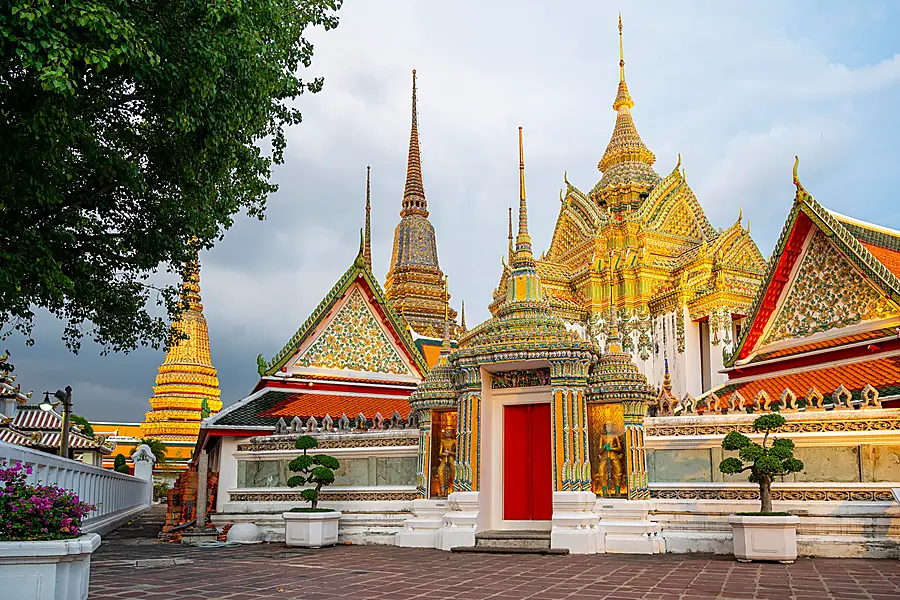
Wat Pho
Sitting just south of the Grand Palace, Wat Pho is Bangkok's oldest temple and home to the colossal 46-meter Reclining Buddha covered in gold leaf. The temple's smaller chedis and vivid murals make it easy to spend a whole morning exploring.
Must-see, especially if you're at all interested in Buddha imagery. A great companion visit to the Grand Palace.

Ayutthaya Historical Park
About an hour north of Bangkok, the ruins of Ayutthaya were once the glittering capital of the Kingdom of Siam from 1351 to 1767. Today, brick prangs and headless Buddha statues dot a UNESCO World Heritage landscape that captures the imagination. You can wander among crumbling temples by foot or bike.
A must-see for history lovers and easily done as a day trip from Bangkok. Worth dedicating a full day rather than rushing through.
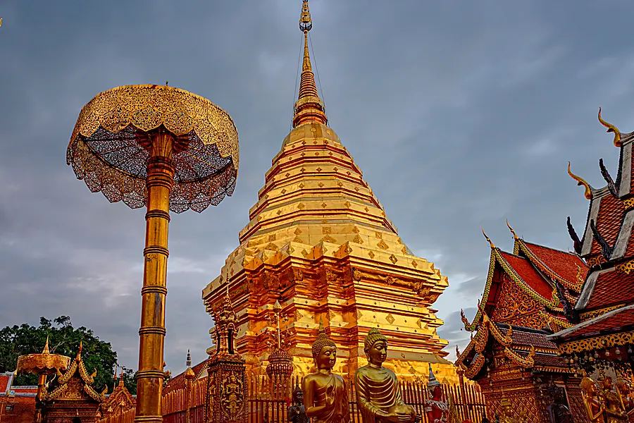
Doi Suthep
Perched on a forested mountain about 15 km from Chiang Mai, Wat Phra That Doi Suthep is reached by a 306-step staircase. The golden chedi at the top glints in the mist and is one of Thailand's most sacred Buddhist sites. On clear days you can see the entire city laid out below.
Must-see if you're in Chiang Mai, though the climb up those stairs can be brutal. Take a songthaew to save energy for the temple itself.
Phi Phi Islands
The Phi Phi archipelago in the Andaman Sea features sheer limestone cliffs, turquoise lagoons, and some of the most photographed beaches in the world. Maya Bay, made famous by the film The Beach, reopened with strict visitor caps to protect its fragile ecosystem.
A must-see if turquoise water and dramatic scenery are your thing. Stay overnight to enjoy the islands after the day-trippers leave.
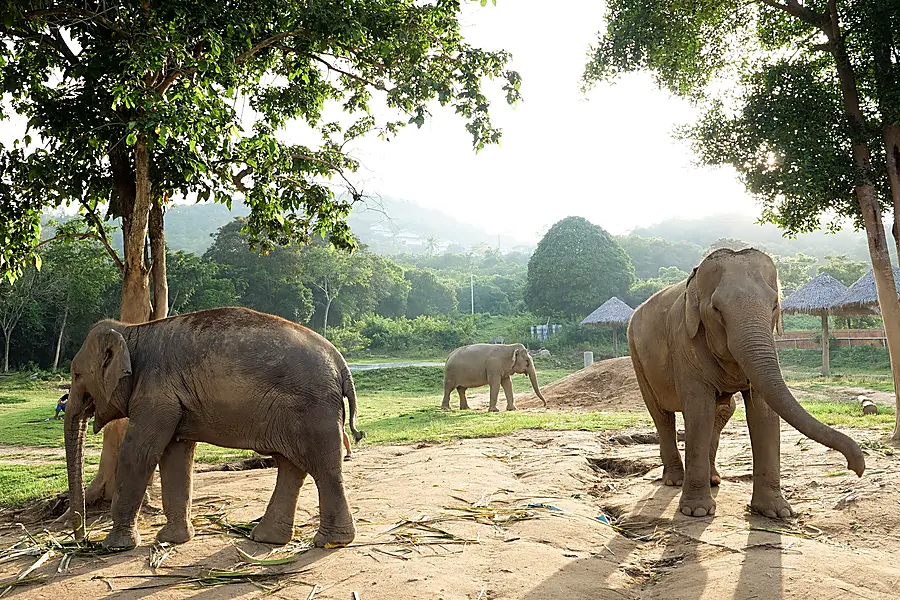
Elephant Nature Park
A sanctuary near Chiang Mai where rescued elephants live in conditions much closer to natural than riding camps. You can feed, bathe, and observe the elephants from a respectful distance.
Must-see if you care about ethical wildlife tourism. Avoid any elephant venue in Thailand that still offers riding.
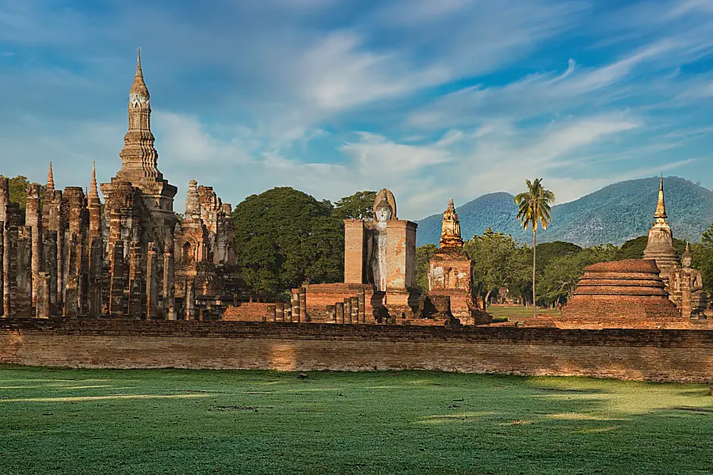
Sukhothai Historical Park
Founded in 1238, Sukhothai was the first independent Thai kingdom and gave birth to Thai art, language, and religion. The UNESCO-listed ruins span temples, ponds, and the famous stone walking Buddha at Wat Si Chum. Bicycles are the traditional way to explore the park.
Must-see for history enthusiasts and often preferred over Ayutthaya for its more tranquil atmosphere. Be aware that it's a long detour from Bangkok.
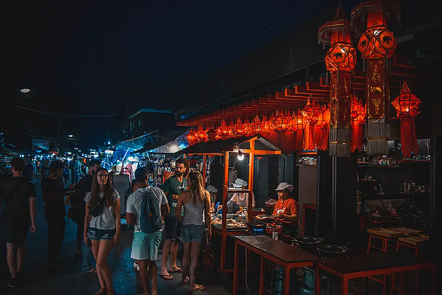
Pai
A small hippie town nestled in the mountains of Mae Hong Son province, Pai has become a magnet for backpackers drawn to hot springs, canyon sunsets, and rice paddy views. The area is dotted with waterfalls, traditional Shan villages, and a relaxed night market. Driving here from Chiang Mai means 762 dizzying curves through the mountains.
Nice to see if you're traveling in northern Thailand and have a few extra days. A great escape from temple fatigue and a chance to slow the pace dramatically.
Khao Sok National Park
One of Thailand's oldest rainforests, Khao Sok features dramatic limestone karsts, emerald lakes, and dense jungle teeming with wildlife. Visitors can take longtail boat rides, go kayaking, or stay in floating bungalows surrounded by stunning scenery.
A must-see for nature lovers and adventure seekers, the park offers a wilder, more off-the-beaten-path experience than most Thai destinations.

Doi Inthanon National Park
Home to Thailand's highest mountain, Doi Inthanon features cool-climate forests, misty viewpoints, and cascading waterfalls like Mae Ya. Twin pagodas sit near the summit, surrounded by lush gardens and colorful hill tribe markets.
A must-see for anyone visiting Chiang Mai, offering a refreshing escape from the lowland heat. The mix of hiking trails, waterfalls, and hilltop temples makes it ideal for a full-day nature excursion.
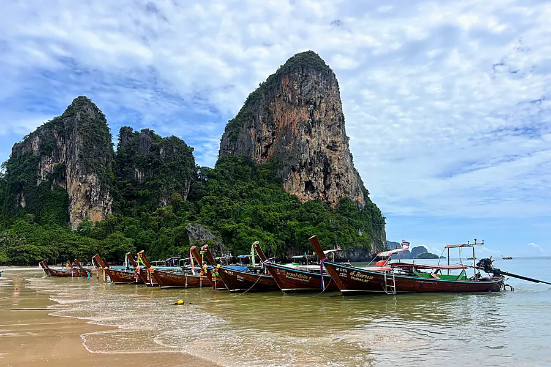
Railay Beach
Accessible only by boat, Railay is a peninsula famed for its dramatic limestone cliffs, hidden caves, and four small beaches. It offers stunning sunsets over the Andaman Sea.
Must-see for adventure travelers, especially climbers and beach lovers seeking a quieter alternative to Phuket.
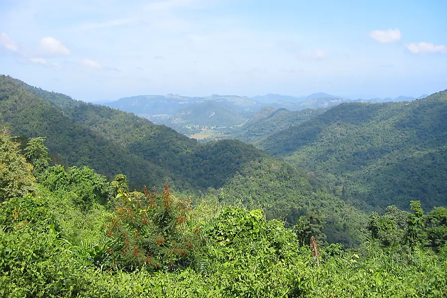
Khao Yai National Park
Thailand's first national park, Khao Yai is a UNESCO World Heritage site known for its dense forests, wild elephants, gibbons, and spectacular waterfalls. Cool mountain air, night safaris, and hiking trails draw nature enthusiasts year-round.
Must-see for wildlife lovers and easily reachable from Bangkok for a weekend trip. The chances of spotting elephants in the wild make it one of the best experiences in Thailand.
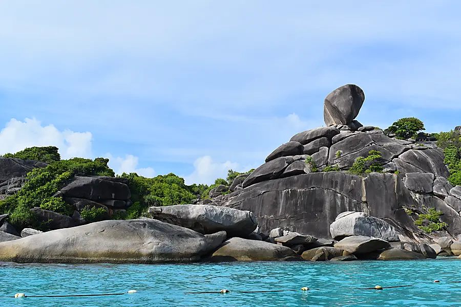
Similan Islands
Crystal-clear waters, granite boulders, and vibrant coral reefs define the Similan archipelago. Open seasonally from October to May, the islands are considered one of the world's best dive sites with excellent visibility and abundant marine life.
Must-see for divers and snorkelers willing to plan around the seasonal opening. If you only do one dive trip in Thailand, this is the place to do it.
Erawan Falls
A seven-tiered waterfall inside Erawan National Park, famous for its turquoise pools where visitors can swim among natural fish. The jungle trails between levels are lively with butterflies, monkeys, and tropical birds.
Must-see if you're heading to Kanchanaburi and enjoy swimming in nature. The upper tiers are less crowded and reward the climb with stunning, emerald-green pools.
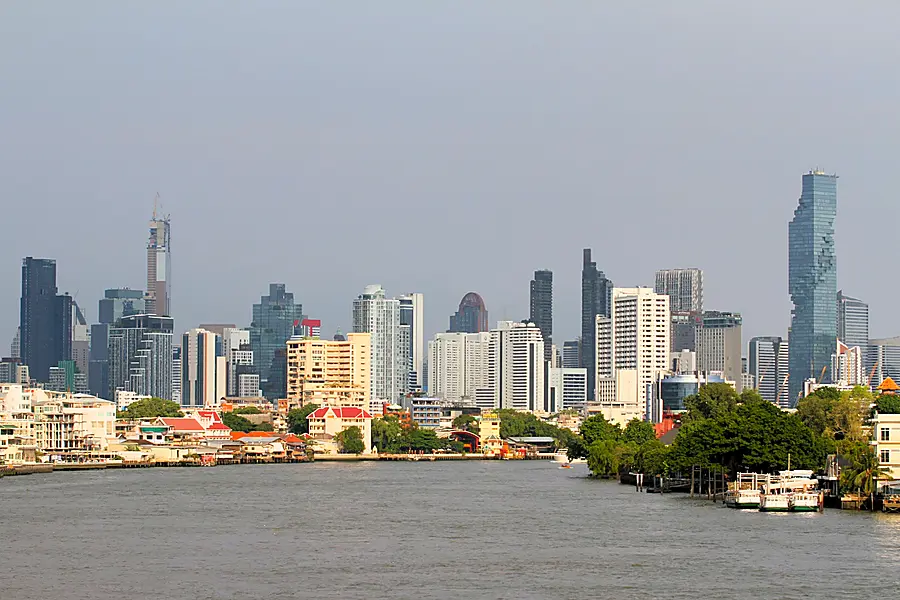
Bangkok
The bustling capital of Thailand, blending modern skyscrapers with ancient temples along bustling canals. It's a hub of street food, nightlife, and shopping. Bangkok pulses with an energy that's uniquely its own.
A must-see for any first-time visitor to Thailand, offering an intoxicating mix of old and new. Give yourself two or three days to soak in the city's vibrant rhythm.
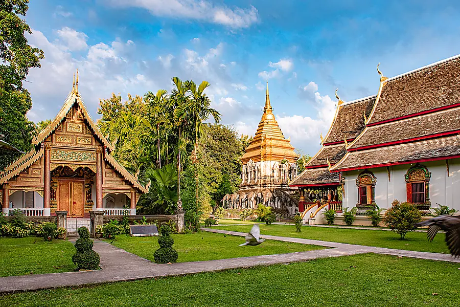
Chiang Mai
The cultural capital of the north, surrounded by misty mountains and ancient jungle. It's home to hundreds of ornate temples, vibrant hill tribe communities, and a famous night bazaar. The laid-back pace offers a refreshing contrast to Bangkok's chaos.
Must-see if you appreciate slower travel, authentic culture, and nature. The Lantern Festival in November alone is worth planning a trip around.
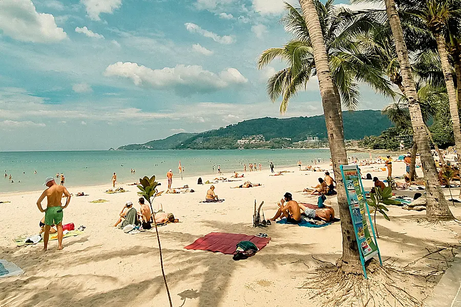
Phuket
Thailand's largest island, famous for its golden beaches, lively nightlife, and stunning limestone karsts. It's a classic resort destination blending luxury resorts, beach clubs, and authentic old-town charm in Phuket Town.
A good choice for first-time visitors who want the full island experience with great variety. Perfect for beach lovers and anyone looking for a mix of relaxation and vibrant social scenes.
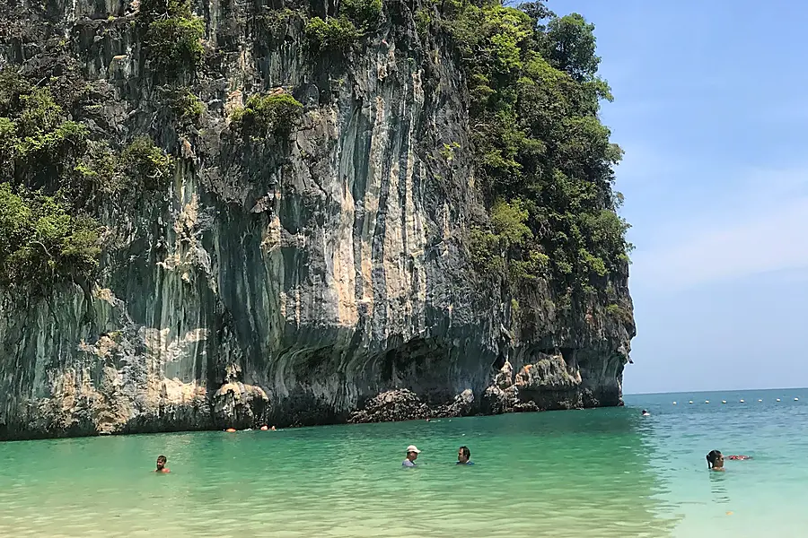
Krabi
A southern province known for dramatic limestone cliffs, emerald waters, and laid-back beach towns. It's a favorite base for island hopping, rock climbing, and snorkeling in the Andaman Sea.
Must-see if you love outdoor adventures and jaw-dropping scenery. The quieter vibe compared to Phuket makes it ideal for travelers seeking natural beauty with plenty to do.
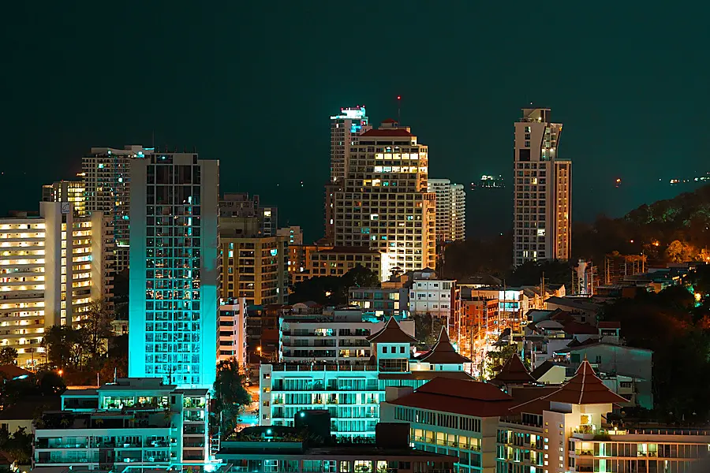
Pattaya
A lively beach resort city on the eastern Gulf coast, known for its bustling waterfront, adult nightlife, cabaret shows, and easy access from Bangkok.
Suitable for people that enjoy city-style beach resorts with plenty of nightlife entertainment. Can be deferred to a second visit if you're after a quieter, more natural Thai island experience.
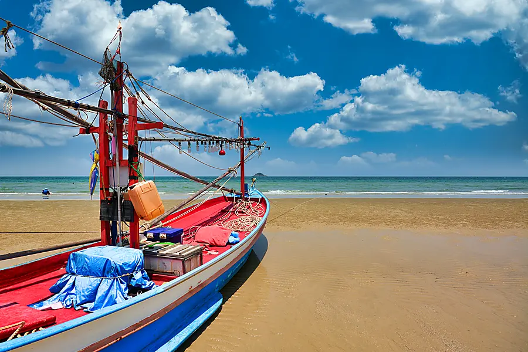
Hua Hin
A classic seaside resort town on the Gulf of Thailand with a long sandy beach, royal palaces, and a relaxed royal-town atmosphere. Popular for golf courses, night markets, and family-friendly beachside resorts.
Must-visit if you like a charming, traditional Thai beach town without the party scene. Perfect for families, retirees, and anyone wanting a calm getaway close to Bangkok.
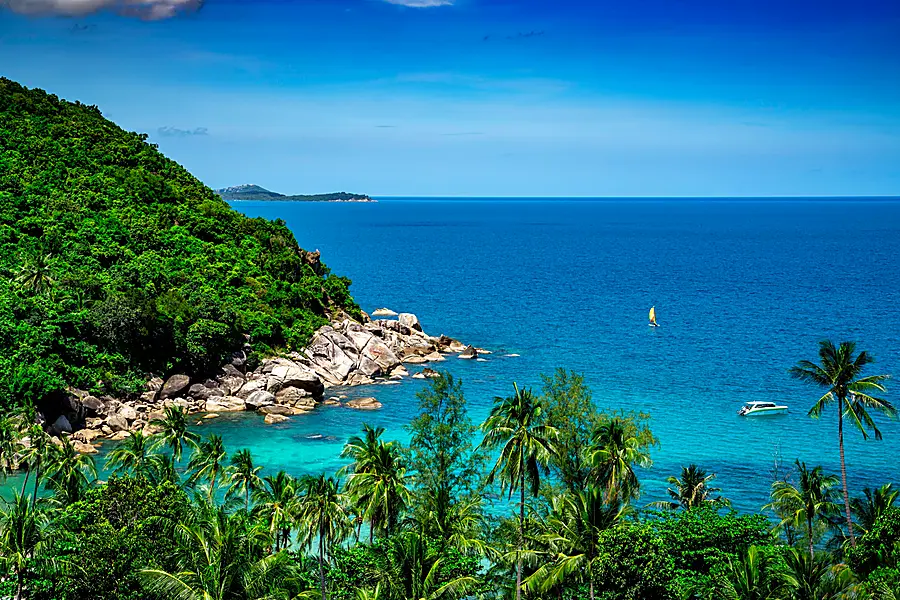
Koh Samui
Thailand's third-largest island blends palm-fringed beaches, coconut groves, and a lively resort scene. It offers everything from luxury spas and beach clubs to jungle waterfalls and the famous Big Buddha temple. Samui's well-developed infrastructure makes it easy for first-time visitors to explore.
Must-see if you want a balance of comfort, nightlife, and tropical beauty without straying far from the beaten path. Especially good for couples and families.
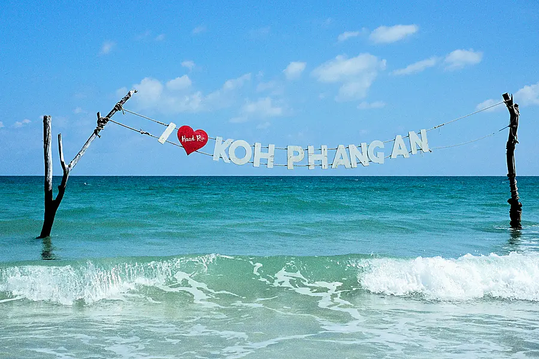
Koh Phangan
Famous worldwide for its monthly Full Moon Party on Haad Rin Beach, Koh Phangan also hides some of Thailand's most beautiful and uncrowded stretches of sand. A relaxed backpacker vibe gives the island a layered charm. The northern beaches, like Bottle Beach, reward visitors willing to go beyond the parties.
Must-see if you love a mix of partying and hidden beaches. Best suited for younger travelers and social spirits.
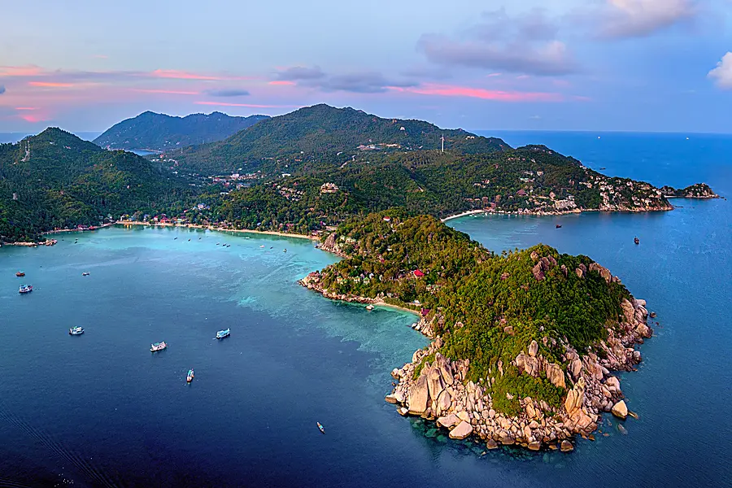
Koh Tao
A compact island known as the diving capital of Thailand, with calm shallow bays and excellent visibility for beginners and pros alike. Its hillsides are dotted with dive shops, casual resorts, and sunset viewpoints. Even those who don't dive will enjoy snorkeling among colorful reefs just off the beaches.
Must-see if you're interested in getting scuba certified at a fraction of the price elsewhere. Less ideal for those seeking big beaches or fancy resorts.
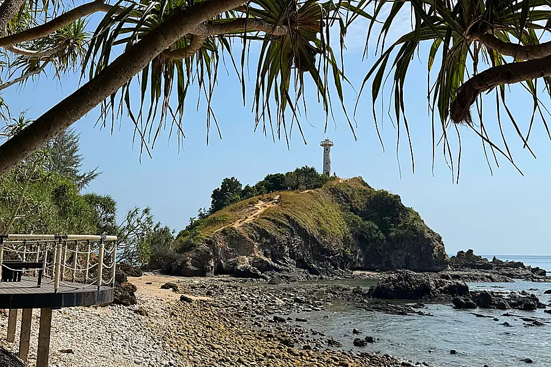
Koh Lanta
A long, laid-back island with a mellower feel than its Andaman neighbors, featuring long sandy beaches on the west coast and mangrove forests on the east. It has a strong family-friendly vibe, and easy access to dive sites around the Koh Lanta National Marine Park. Sunsets here are reliably spectacular.
Nice-to-see and especially well-suited for families or travelers looking for a quieter alternative to Phuket. Great for slow-paced beach holidays.
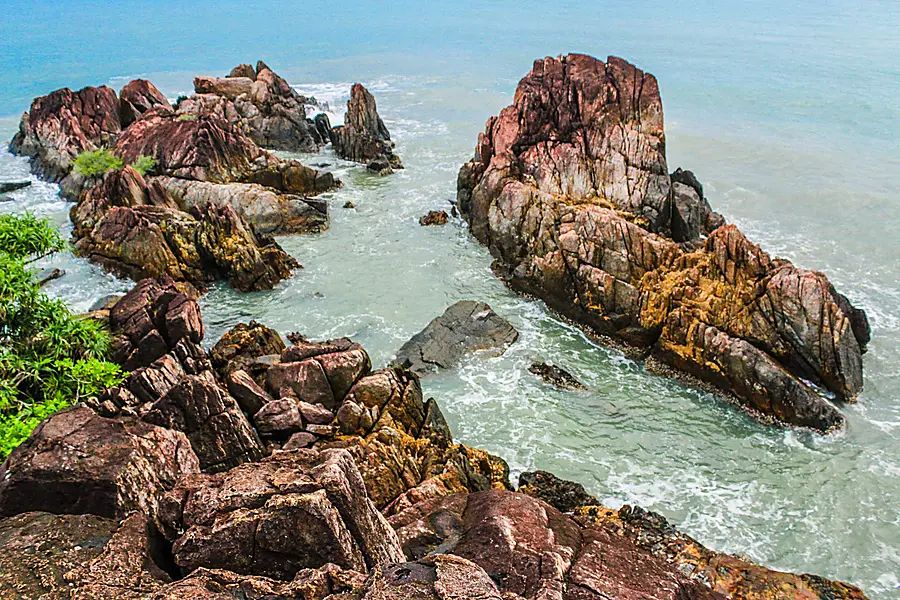
Koh Chang
Thailand's second-largest island remains refreshingly underdeveloped, with jungle-clad hills spilling down to soft white-sand beaches along the west coast. Lonely Beach and White Sand Beach offer contrasting moods from buzzing backpacker hangouts to family resorts.
Can visit if you prefer nature and quiet over big-resort tourism. Worth staying a few nights to explore the waterfalls and nearby islands.
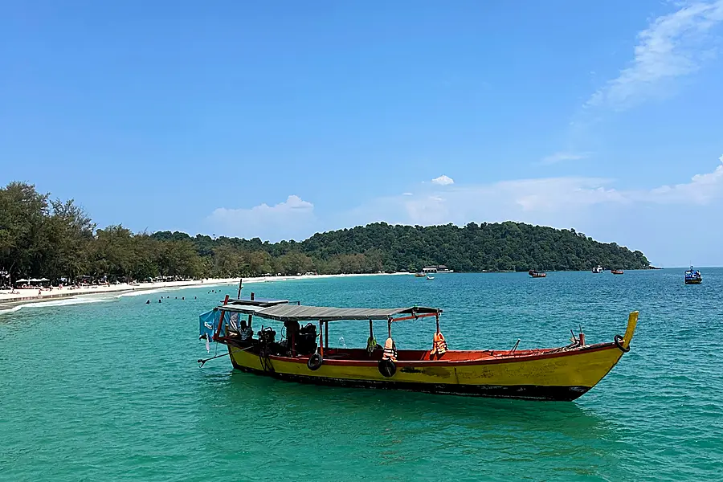
Koh Kood
One of Thailand's least developed and most beautiful islands, known for its crystal-clear water, old-growth jungle, and sleepy fishing-village feel. It is often called what Koh Samui was like 30 years ago.
Must-see if you prioritize privacy and pristine nature over nightlife or shopping. Best visited in the dry season, and ideal for couples seeking seclusion.
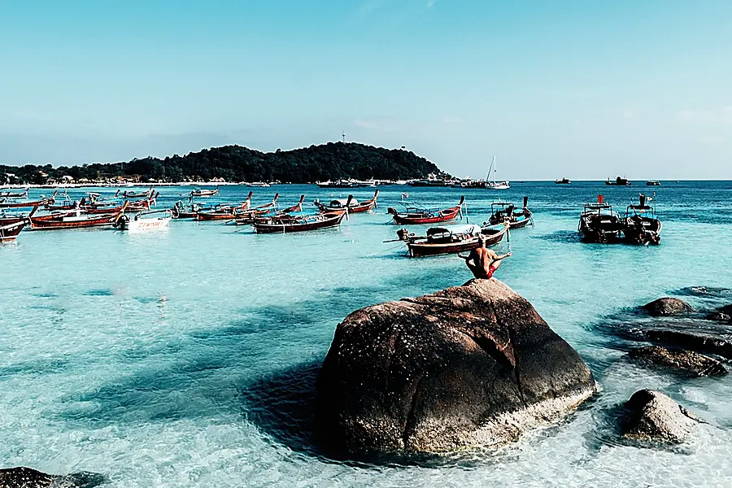
Koh Lipe
Nicknamed the Maldives of Thailand, this tiny island near the Malaysian border wows visitors with powdery white sand and reefs reachable from the beach. The surrounding Tarutao National Marine Park protects rich snorkeling spots and quiet neighboring islets.
Must-see for snorkeling lovers and anyone craving an unspoiled island experience. Slightly harder to reach, which is exactly what keeps it special.
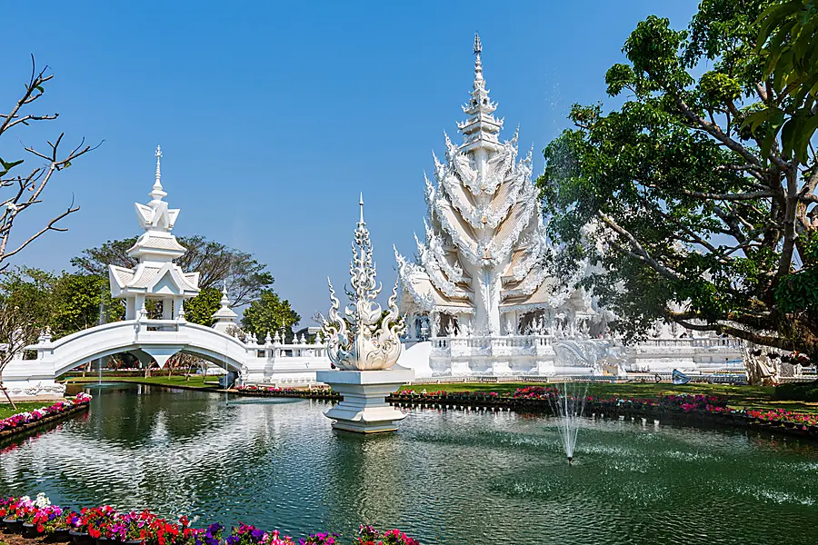
Wat Rong Khun (White Temple)
An contemporary Buddhist temple in Chiang Rai featuring striking white architecture covered in mirrored glass details that shimmer in the sunlight. It blends traditional Thai temple motifs with surreal, modern artistic elements, making it unlike any other religious site in the country.
Definitely a must-see if you are visiting Chiang Rai, as it is one of Thailand's most photographed and visually unique temples. Allow extra time to explore the surrounding grounds and artwork.
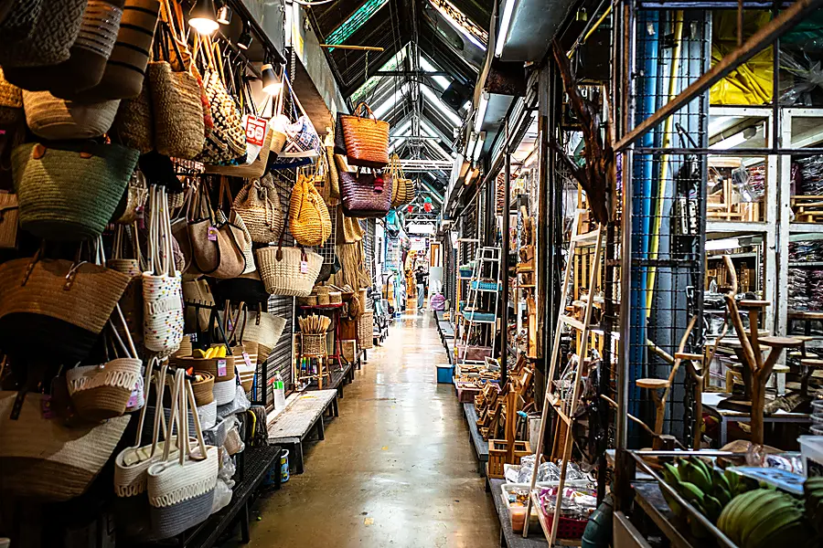
Chatuchak Weekend Market
One of the world's largest weekend markets sprawls across 15,000 stalls in Bangkok, selling everything from vintage clothing and handicrafts to street food and pets. The maze-like layout is part of its charm.
Must-see for shopaholics and foodies visiting Bangkok. Wear comfortable shoes and bring cash for the best experience.
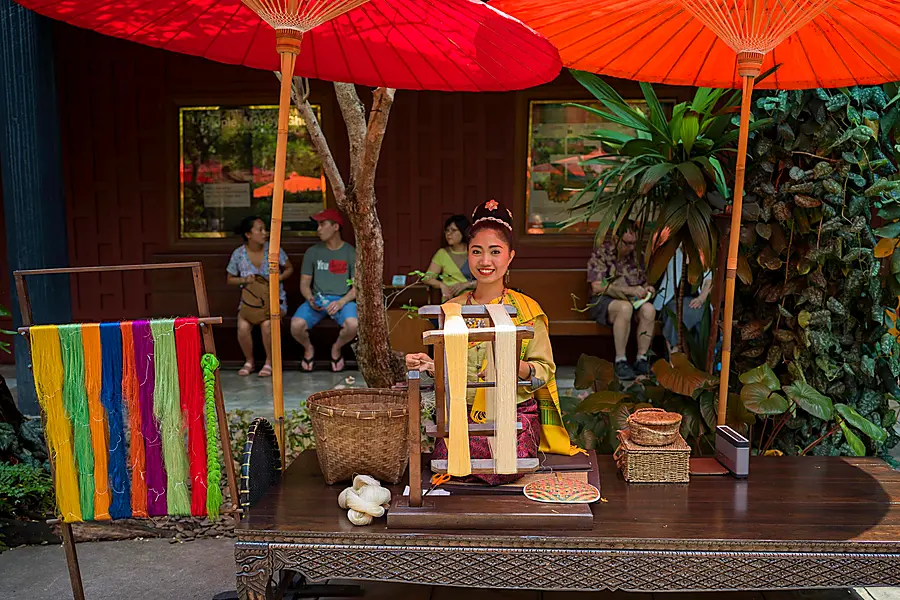
Jim Thompson House
A museum complex in central Bangkok built around the traditional Thai-style home of the American silk entrepreneur who mysteriously disappeared in 1967. The teak house showcases Southeast Asian art and antique collections in a tranquil garden setting.
Nice-to-see for visitors interested in Thai silk, architecture, and mid-century history. Quieter than Bangkok's main temples.
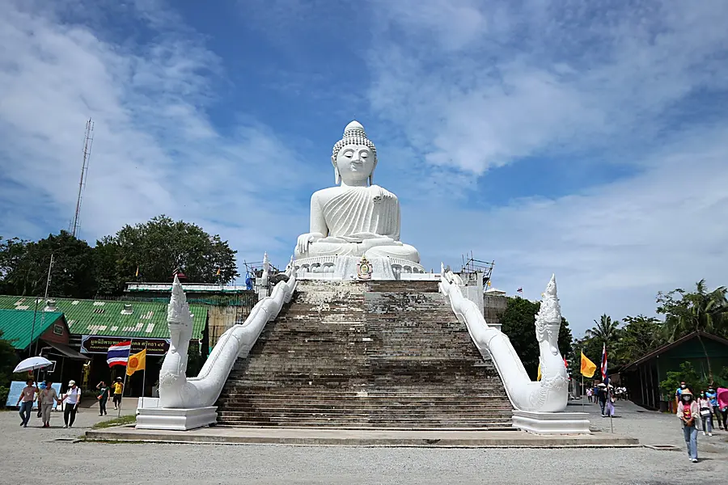
Big Buddha of Phuket
A massive 45-meter white marble Buddha sits atop Nakkerd Hill overlooking Phuket's southern beaches. The viewpoint is popular for sunset visits and offers panoramic views across Chalong Bay and Kata.
Must-see if you're staying in southern Phuket. Combine with a visit to nearby Wat Chalong for a full cultural afternoon.
Travel Tips
Visit during the cool and dry season from November to February, when temperatures are comfortable and rain is minimal, making it ideal for sightseeing and outdoor activities.
Consider March to May if you don't mind intense heat, since this season means fewer tourists and lower prices, though be prepared for temperatures often exceeding 35°C.
For a one-week trip, spend 2-3 days in Bangkok exploring the Grand Palace, Wat Pho, and floating markets, then fly south for 4 days island-hopping around Koh Phi Phi, and Railay Beach to balance culture with beach time.
A two-week itinerary works well as Bangkok for 3 days, northern Thailand (Chiang Mai and Chiang Rai) for 4 days to experience temples and hill-tribe culture, then 8 days along the Andaman coast including Krabi, and the Similan Islands for snorkeling and diving.
With three weeks, add a nature-focused leg to the north: spend 3 days in Pai or Doi Inthanon National Park for hiking and waterfalls, then loop south to Koh Phangan for jungle treks and quieter islands before finishing in Koh Samui.
Thailand has three seasons: cool (Nov-Feb, 20-30C, dry and pleasant), hot (Mar-May, 30-40C, very humid), and rainy (Jun-Oct, 25-32C, with heavy afternoon downpours).
Bangkok's BTS Skytrain and MRT subway are the fastest way to dodge notorious traffic, and a one-day pass or stored-value Rabbit card makes hopping between Sukhumvit, Silom, and Siam cheap and painless.
For long-distance travel, book domestic flights with budget carriers like AirAsia, Nok Air, or Thai VietJet. Book early to get the best prices.
Overnight sleeper trains from Bangkok to Chiang Mai or Surat Thani (gateway to the islands) save both a night's hotel cost and travel time, with first-class sleeper cabins offering AC and decent comfort.
Use Grab or Bolt for rides in Bangkok, and other towns instead of hailing random taxis; always confirm the driver hits the meter (Grab fare) or agree on a fixed price before getting in unmarked cabs.
Grab and Bolt are the go-to ride-hailing apps across Thailand. In Bangkok, the BTS Skytrain and MRT subway apps (BTS SkyTrain and MRT Bangkok) let you check routes, fares, and station exits in real time.
PromptPay and TrueMoney are widely accepted for QR code payments at street stalls, markets, and most shops, so linking your bank card to either app saves you from carrying cash. Note that some global apps like Apple Pay may have limited acceptance.
Always carry cash in Thai Baht for street food, markets, and small shops, since many vendors don't accept cards or mobile payments.
Grab and Bolt are reliable and cheap for rides. Avoid unmetered tuk-tuks unless you agree on a price upfront to avoid scams in tourist areas.
Tipping isn't mandatory but appreciated; rounding up the bill or leaving small change (20-50 baht) for great service at restaurants and hotels goes a long way.
Budget travelers can get by on around 800–1,500 THB per day by staying in hostels, eating at street stalls, and using public transport.
Mid-range travelers should budget roughly 2,500–5,000 THB daily for comfortable 3-star hotels, restaurant meals, and occasional taxis or Grab rides.
For a luxury experience, expect to spend 8,000+ THB per day on upscale resorts, fine dining, and private tours. You can save by booking spa treatments or tours online in advance for discounts. .
Always greet people with a slight bow and a warm 'wai' (palms together at chest level) rather than waving or shaking hands; returning the wai is polite, though a gentle nod and smile is acceptable.
Dress modestly when visiting temples by covering your shoulders and knees, and remove your shoes before entering any temple, or home; this is a sign of respect and is strictly observed across Thailand.
Never touch anyone's head, as it is considered the most sacred part of the body, and avoid pointing your feet at people or sacred objects.
Stick to bottled or filtered water and avoid ice from street vendors, as tap water in Thailand can cause stomach issues for travelers not used to it.
Watch out for common tourist scams like tuk-tuk drivers claiming a temple is shut down to redirect you, and always agree on a price before getting in.
Keep your belongings secure in busy areas like Khao San Road, BTS stations, and night markets where pickpocketing and bag-snatching can happen, mainly after dark.
Use reputable clinics or hospitals if you need medical care, and consider vaccinations for hepatitis A and typhoid before your trip, along with mosquito repellent to guard against dengue.
Songkran in April is Thailand's famous New Year water festival, especially lively in Bangkok where streets turn into playful water fights; pack quick-dry clothes and protect your phone in a waterproof pouch.
Loy Krathong, held on the full moon night in November, is a magical lantern and floating offering festival best experienced in Sukhothai or Chiang Mai.
The Vegetarian Festival (Tesagan Gin Je) in late September or October turns Phuket's streets into a dramatic spectacle of devout processions, piercing rituals, and delicious meat-free street food.
Don't miss pad thai, som tam (green papaya salad), and tom yum goong from street vendors and local markets for the most authentic and affordable flavors.
Be cautious with street food hygiene by choosing stalls that have long lines of locals, which usually means fresh, high-turnover ingredients and safer preparation.
If you have dietary restrictions, learn a few Thai phrases like 'mai sai nam sai' (no fish sauce) or 'gin jay' (vegetarian), as Thai cuisine relies heavily on fish sauce, oyster sauce, and shrimp paste.